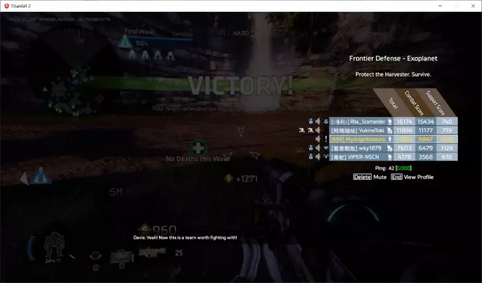

01
房间难度与泰坦等级
进不去高难度房间？高难度房间用不了某些泰坦？
只有满足房间等级要求的泰坦才能使用。最高等级的泰坦也达不到房间最低等级时，您无法正常游戏。
北极星虽然解锁了所有神盾的效果，但神盾等级仍然从零开始。从简单难度开始反复使用该泰坦提升等级，直到能在想要的难度中使用它。
偷懒技巧只有 7 个原版泰坦计算神盾等级，客制化泰坦与对应原版泰坦算在一起。
02
客制化内容与地图
为什么这些敌方 / 我方泰坦我都没见过？
本服务器拥有大量客制化（即定制化、自定义）内容，例如各种泰坦的核武变种、精英变种等。
简单模式
简单房间中的精英和波次更简单，至尊白色涂装的自动泰坦会被强化。
地图变更
大部分地图都改过：敌方泰坦的降落数量、种类、地点全部变化，部分地图还加入了波次变化、特殊事件、特殊武器。出现特殊事件时会有文字或语音提示，请留意。
突然被弹飞很远，可能是敌方泰坦技能或特殊设计。
03
精英泰坦
精英泰坦是 SL 的特色。
外貌为白色至尊，或黑红、黄色涂装。血量较高，更频繁地使用核心技能。不同的精英有不同的特性，非白色涂装的精英带有特殊能力。
地图上会显示它的泰坦种类（图标只有那么几个），抬头显示上有特殊标识。
| 难度 | 精英掉落 |
|---|---|
| 简单 / 普通 | 电池（绿色） |
| 困难 / 大师 | 强化电池（黄色） |
玩家驾驶使用至尊皮肤的同时使用坚韧光芒皮肤，需要精英权限（见「驾驶资格证」）。
04
泰坦与技能替换
05
精英与先锋驾驶资格证
精英泰坦和先锋级泰坦都需要解锁。共同条件：
- 场上没有我方精英、变种帝王、先锋级泰坦
- 分数 10000 以上，无重启完美通过
- 下表每张地图通过三次，并达到对应名次
| 地图 | 精英 · 困难及以上 | 先锋 · 大师及以上 |
|---|---|---|
| 遗迹 | 前三名 | 前二名 |
| 天使城 | 第一名 | 第一名 |
| 虎大 | 第一名 | — |
| 殖民地 | — | 第一名 |
| 家园 | 前二名 | 第一名 |
| 城镇 | 第一名 | 第一名 |
| 设施 | 第一名 | 第一名 |
| 战游 | 第一名 | 第一名 |
| 系外 | 第一名 | 第一名 |
提交方式
把截图和 UID 发给管理 @陵光庚辰。截图要包含整个游戏窗口，能看到胜利字样、玩家排名和采集机情况。UID 是游戏内屏幕左上角玩家 ID 后的那一串数字。
注意两种资格证的考核不能同时进行，但没有时间和先后限制。

07
恶性游戏行为
- 队友在比赛中途或波次重启时退出，可带截图证据 @管理 举报。
- 中途退出两次会被服务器 ban。因特殊情况被迫退出，请及时在群里说明，并与举报的队友和解。
- 通过特殊手段故意伤害队友可能被警告或处罚；双方都不介意的玩笑无所谓。
- 在群聊中举报即可，请不要骚扰管理或群内其他人。